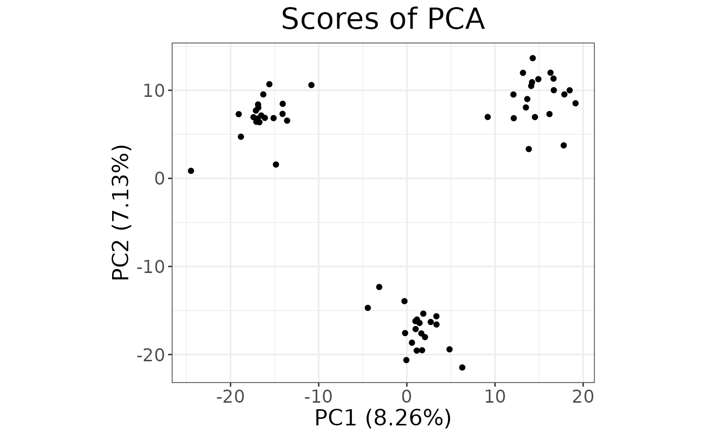

Computes the leading principal components of the genotypes of a
gen_tibble, with one of two methods. method = "partial" (the default)
is exact and handles missing genotypes as plink --pca (PLINK 1.9) does,
without imputation; method = "random" needs complete or imputed
genotypes, but much less memory, for very large numbers of individuals.
For datasets with linkage disequilibrium, gt_pca_autoSVD() implements the
algorithm of bigsnpr, which removes regions of long-range LD and outliers.
Usage
gt_pca(
x,
k = 10,
method = c("partial", "random"),
fun_scaling = NULL,
n_cores = bigstatsr::nb_cores(),
block_size = NULL,
engine = c("auto", "blas", "internal"),
tol = 1e-04,
verbose = FALSE,
fun_prod = bigstatsr::big_prodVec,
fun_cprod = bigstatsr::big_cprodVec,
total_var = TRUE
)Arguments
- x
a
gen_tblobject, with diploid (or pseudohaploid) genotypes- k
the number of principal components to compute. Default is
10.- method
"partial"(the default) or"random"(see Methods).- fun_scaling
NULL(the default) for the binomial scaling, or a scaling function (see Scaling).- n_cores
the number of cores. With
"partial", they read the genotypes, count the loci genotyped in both individuals and run the internal matrix products; the BLAS uses its own threads (see theRhpcBLASctlpackage to set them). With"random", they run the matrix products ofbigstatsr::big_prodVec()andbigstatsr::big_cprodVec()(in one process); with otherfun_prodorfun_cprod, the parallel SVD ofbigstatsr::big_randomSVD()runs onn_cores - 1workers and one more process that coordinates them (or on one core, with fewer than 3 cores).- block_size
for
"partial", the number of loci decoded at a time (each block takes 8 bytes per individual and locus). By default, blocks of about 128 MB (between 1,024 and 16,384 loci).- engine
for
"partial", the matrix products:"auto"(the default),"blas"or"internal"(see Speed).- tol
for
"random", the precision parameter ofRSpectra::svds(). Default is1e-4.- verbose
for
"random", should some progress be printed? Default isFALSE.- fun_prod
for
"random", a function that takes 6 arguments (in this order): a matrix-like objectX, a vectorx, a vector of row indicesind.rowofX, a vector of column indicesind.colofX, a vector of column centers (corresponding toind.col), and a vector of column scales (corresponding toind.col), and computes the product ofX(subsetted and scaled) withx. Default isbigstatsr::big_prodVec().- fun_cprod
for
"random", the same asfun_prod, but for the transpose ofX. Default isbigstatsr::big_cprodVec().- total_var
a boolean indicating whether to compute the total variance, needed for the proportion of variance explained by each component (see
gt_pca_tidiers). Default isTRUE.
Value
a gt_pca object, which is a subclass of big_SVD; this is an S3
list with elements:
d, the singular values (the eigenvalues of the GRM ared^2 / m, withmthe number of loci, as given byplink --pca)u, the scores for each sample on each component (the left singular vectors, i.e. the eigenvectors of the GRM)v, the loadings (the right singular vectors; with missing genotypes and"partial", \(Z^T u / d\), with missing genotypes as 0)center, the centering vectorscale, the scaling vectormethod,"partial"or"random"call, the call to the functionloci, the loci usedsquare_frobenius, the total variance (withtotal_var = TRUE; with missing genotypes and"partial", the number of loci times the trace of the GRM)
Two attributes record the genotypes that the PCA was computed on:
imputed,TRUEif the PCA used imputed genotypesmissing,TRUEif the genotypes had missing values (only possible with"partial")
PCAs made by earlier versions of tidypopgen do not have these
attributes; their methods needed complete or imputed genotypes.
Note
Rather than accessing elements of a gt_pca object directly, it is
better to use tidy and augment. See gt_pca_tidiers.
Methods
Both methods compute the leading eigenvectors of the genetic relationship matrix (GRM) of the standardised genotypes \(z_{il}\) (by default \(z_{il} = (g_{il} - 2p_l) / \sqrt{2p_l(1-p_l)}\), with \(g_{il}\) the number of alternate alleles and \(p_l\) their frequency):
"partial"computes the GRM, then its leading eigenvectors (an exact, truncated decomposition). It is the method of choice up to some tens of thousands of individuals: the GRM takes 8 bytes per pair of individuals (0.2 GB for 5,000 individuals, 3.2 GB for 20,000), and the time grows with the square of the number of individuals and linearly with the number of loci."random"runsbigstatsr::big_randomSVD(), which never builds the GRM: it multiplies blocks of the genotypes by vectors until the components converge (totol), with memory linear in the numbers of individuals and loci. It is slower than"partial"(e.g. 175 s against 31 s on 1,043 individuals and 643,733 loci), but works with any number of individuals.
With complete (or imputed) genotypes, both give the singular value
decomposition of the standardised genotypes, and "partial" gives the
same results as the former gt_pca_partialSVD().
Missing genotypes
With method = "partial", missing genotypes
do not need to be imputed: as in PLINK 1.9 (plink --make-rel, which
plink --pca decomposes), each pair of individuals is compared over the
loci genotyped in both,
$$G_{ij} = \frac{1}{n_{ij}} \sum_l z_{il} z_{jl},$$
with \(z_{il} = 0\) when \(g_{il}\) is missing, \(n_{ij}\) the
number of loci genotyped in both individuals, and allele frequencies
from the genotyped individuals. This keeps individuals with many missing
genotypes (e.g. ancient DNA) in place, whereas imputation pulls them
towards the centre of the PCA, or makes missingness an axis of its own.
The results match those of PLINK 1.9, also with very high missingness.
Imputed genotypes are used only if the gen_tibble is set to use them
(with gt_set_imputed()). Pairs of individuals with no locus genotyped
in both have no defined relationship and give an error: remove the
individuals with the most missing genotypes (see indiv_missingness()).
With missing genotypes, the GRM is not necessarily positive
semi-definite; only its largest (positive) eigenvalues are used.
With method = "random", the genotypes must be complete or imputed (see
gt_impute_simple()); imputed genotypes are used automatically when
they exist.
The PCA records which genotypes it used (see Value). With missing
genotypes, gt_pcadapt() tests each locus on the individuals genotyped
at it, and gt_dapc() estimates the loadings of the loci without
counting missing genotypes as 0 (for which it needs the gen_tibble).
Scaling
fun_scaling = NULL (the default) uses the binomial
scaling above, as bigsnpr::snp_scaleBinom() (and PLINK) do, with the
allele frequencies of the genotyped individuals. A function that returns
a centre and a scale for each locus, such as
bigsnpr::snp_scaleAlpha() or bigstatsr::big_scale(), can be used
instead. A scaling computed from the genotypes (such as these) needs
complete or imputed genotypes, and so does any scaling with "random"
(one that does not depend on the genotypes, e.g.
big_scale(center = FALSE, scale = FALSE), works with missing genotypes
with "partial"). With "partial", loci
with a zero scale (monomorphic loci) add nothing to the GRM, but are
counted in \(n_{ij}\), as in PLINK (filter them out first); with
"random", they give an error.
Pseudohaploids
Pseudohaploid individuals (see
gt_pseudohaploid()) are coded 0 or 2, and enter the PCA as homozygous
diploids, as in PLINK and smartpca with pseudohaploid ancient DNA:
half their dosage is their allele frequency, as for diploids, while the
allele frequencies of the default scaling count one allele per
pseudohaploid (as loci_alt_freq() does). Their own entries on the
diagonal of the GRM are about twice those of diploids, which does not
change the relationships between individuals.
Speed
With method = "partial", the matrix products use either
the BLAS library that R uses (engine = "blas"), which is fastest when
it is an optimised one (OpenBLAS, MKL, Apple Accelerate), or the
vectorised products of the Eigen library in parallel on n_cores
(engine = "internal"), which do not depend on the BLAS and are many
times faster than R's reference BLAS (the default on Windows and in the
CRAN builds of R for macOS). The internal products are in single
precision for blocks of up to 1,024 loci, summed in double precision
(twice as fast; the relative error of the GRM is about 1e-7, well below
the 6 significant digits that PLINK writes). engine = "auto" times both
on a small product, once per session, and uses the faster. The number of
loci genotyped in both individuals is counted on bit-packed genotypes, as
in PLINK. On a laptop with 4 cores and OpenBLAS, 4,000 individuals and
100,000 loci with 45% missing genotypes took 32 s (62 s with PLINK 1.9),
and 1,000 individuals and 300,000 complete loci 7 s (8 s with PLINK, 11 s
with the former gt_pca_partialSVD()); with R's reference BLAS, 39 s and
12 s.
References
Purcell S. et al. (2007) PLINK: a tool set for whole-genome association and population-based linkage analyses. American Journal of Human Genetics 81: 559-575.
Chang C.C. et al. (2015) Second-generation PLINK: rising to the challenge of larger and richer datasets. GigaScience 4: 7.
Privé F., Luu K., Blum M.G.B., McGrath J.J. and Vilhjálmsson B.J. (2020) Efficient toolkit implementing best practices for principal component analysis of population genetic data. Bioinformatics 36: 4449-4457.
See also
pairwise_grm() with method = "plink" for the GRM itself;
gt_pca_autoSVD() for data with linkage disequilibrium.
Other gt_pca_functions:
gt_pca_autoSVD(),
gt_pca_partialSVD(),
gt_pca_randomSVD()
Examples
example_gt <- load_example_gt("gen_tbl")
# the example has missing genotypes, which are compared pairwise
gt_pca(example_gt, k = 2)
#> === PCA of gen_tibble object ===
#> Method: [1] "partial"
#>
#> Genotypes: with missing genotypes (compared pairwise)
#>
#> Call ($call):gt_pca(x = example_gt, k = 2)
#>
#> Eigenvalues ($d):
#> 4.099 3.372
#>
#> Principal component scores ($u):
#> matrix with 7 rows (individuals) and 2 columns (axes)
#>
#> Loadings (Principal axes) ($v):
#> matrix with 6 rows (SNPs) and 2 columns (axes)
#>
# three simulated populations, with up to 90% missing genotypes
set.seed(1)
sim_gt <- gt_simulate_bn(
n_indiv = c(20, 20, 20), n_loci = 2000, fst = 0.1,
missing = rep(seq(0, 0.9, length.out = 20), 3)
)
sim_pca <- gt_pca(sim_gt, k = 2, n_cores = 1)
autoplot(sim_pca, type = "scores")

# the random method needs complete or imputed genotypes, without
# monomorphic loci
sim_gt <- select_loci_if(sim_gt, loci_maf(genotypes) > 0)
sim_gt <- gt_impute_simple(sim_gt, method = "mode")
gt_pca(sim_gt, k = 2, method = "random")
#> === PCA of gen_tibble object ===
#> Method: [1] "random"
#>
#> Genotypes: imputed
#>
#> Call ($call):gt_pca(x = sim_gt, k = 2, method = "random")
#>
#> Eigenvalues ($d):
#> 88.074 82.408
#>
#> Principal component scores ($u):
#> matrix with 60 rows (individuals) and 2 columns (axes)
#>
#> Loadings (Principal axes) ($v):
#> matrix with 1970 rows (SNPs) and 2 columns (axes)
#>